Lesson 3 supplied asset pack 75 separate assets from the 18 user-supplied images. The originals retain their artwork and transparency. Guided lettering artwork is reference art; the game uses its existing interactive SVG stroke guide.
girl 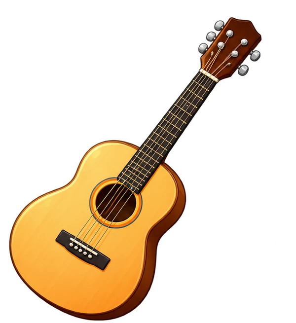
guitar word-girl word-guitar capital-g lowercase-g outline-capital outline-lowercase 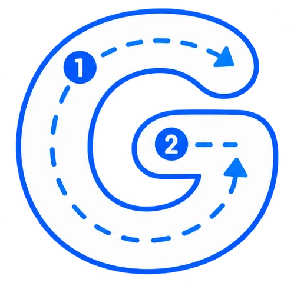
guide-capital 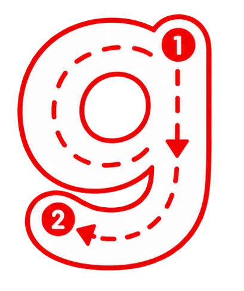
guide-lowercase 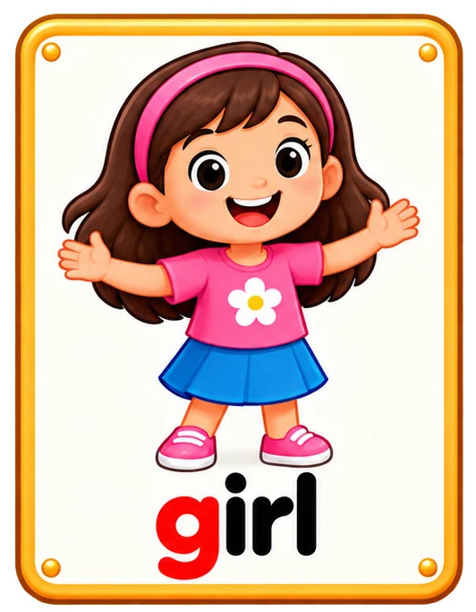
card-girl 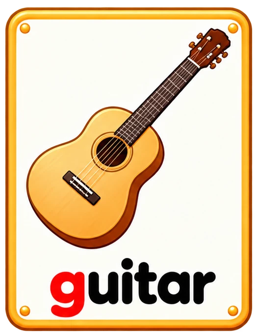
card-guitar badge-capital badge-lowercase sound-g button-listen button-replay button-pencil button-microphone button-yes button-no button-play button-restart sign-gg speaker 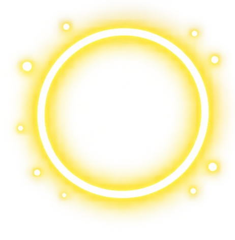
halo star star-small note g-sound not-g-sound wave headphones bubble-capital bubble-lowercase 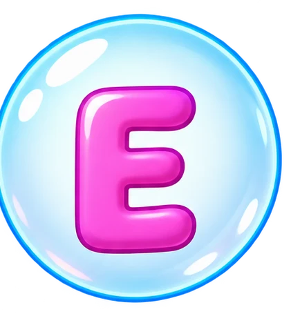
bubble-E catch-star cloud 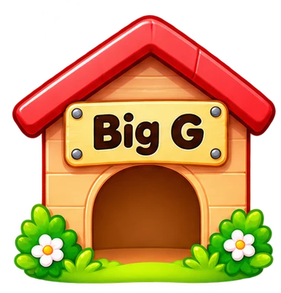
home-capital 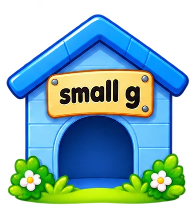
home-lowercase tile-capital tile-lowercase missing-g 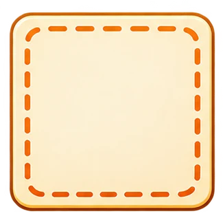
gap 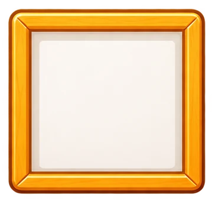
frame burst trace-pencil trace-arrow trace-dot 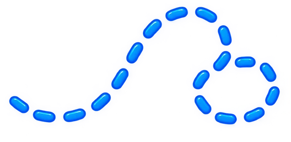
trace-path trace-paper mystery question 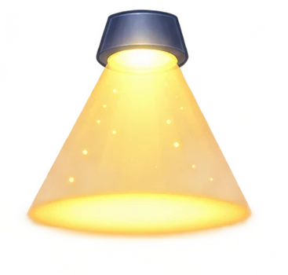
spotlight trophy 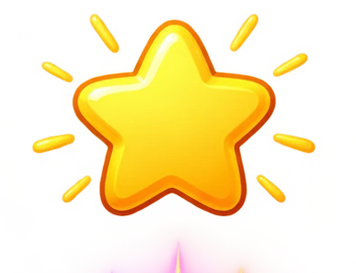
reward-star 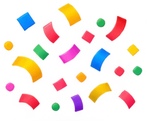
confetti small-star sparkle magic 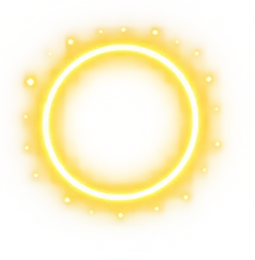
ring correct retry blue-burst reward-cloud notes sunburst meadow music-stage 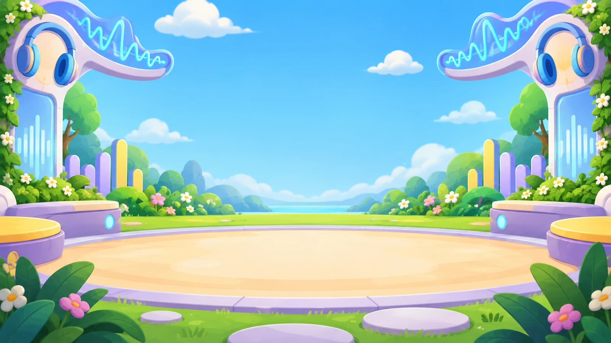
listening-stage catch-meadow 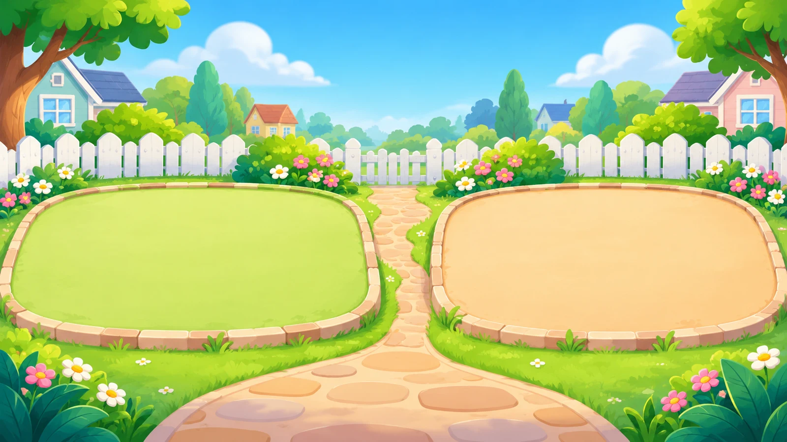
sorting-garden 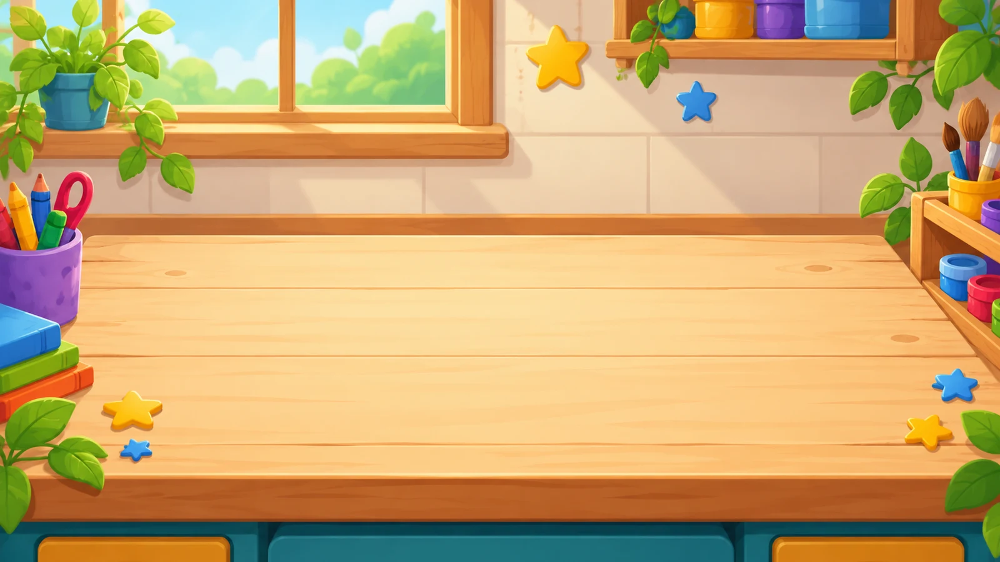
word-table 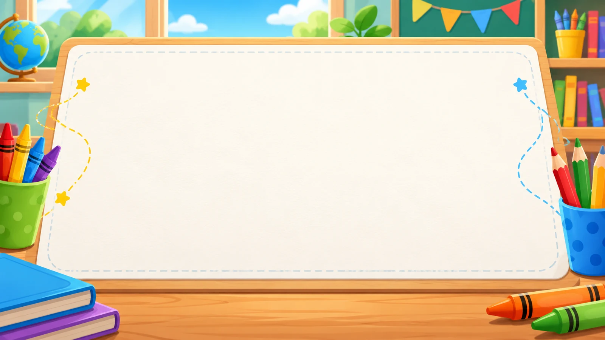
trace-desk 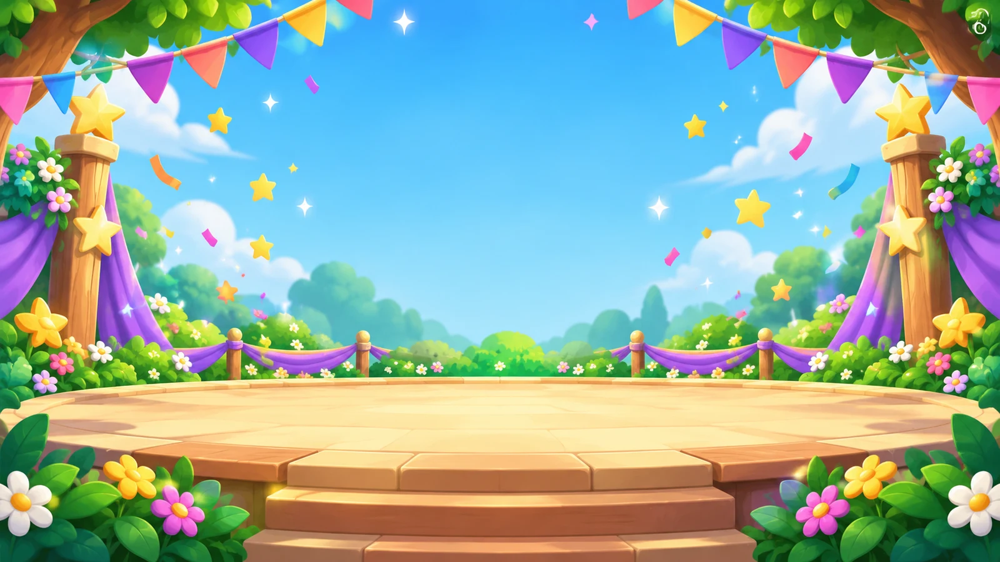
reward-stage